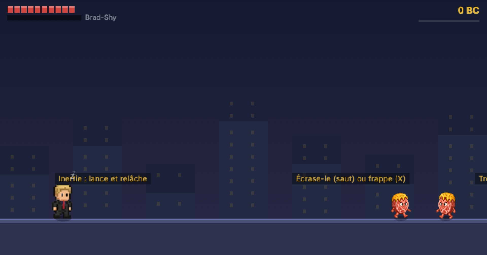

Prototype 06 — niveau d'introductionLe jeu
Brad Bitt,
mais le jeu
Dix niveaux, un monde parallèle, des Serra à écraser et une machine bavarde qui commente vos achats. Voici tout ce que l'on peut déjà en dire.
- 27 29 nov.Bêta 2026
- 9 janv.Sortie 2027
- 10Niveaux prévus
- 01Prototype jouable